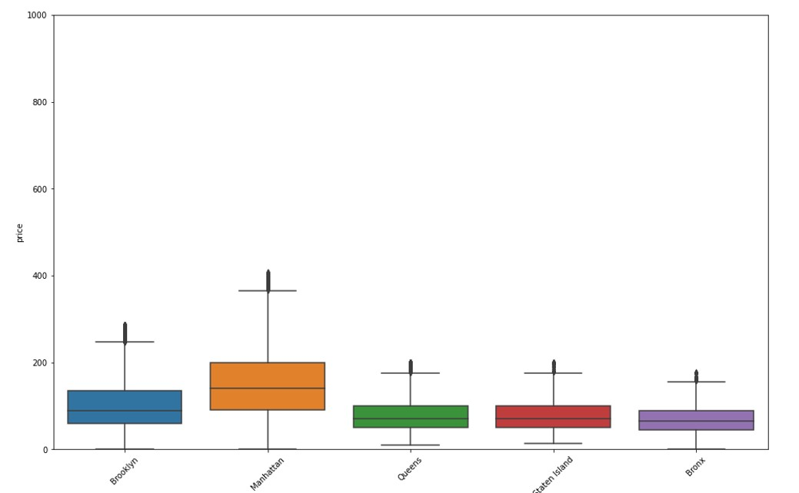

Unit 1~3 learnings
Unit 1~3 presented methodology relating to exploratory data analysis:
- The steps involved with EDA
- Understanding the dataset through feature exploration
- How to spot anomalies within the dataset
- Visual analysis of the dataset
Collaborative learning discussion 1 also kicked in week 1 with interesting discussion topics related to specific incidents caused by failures of an information system related to the fouth industrial revolution. My topic focussed on Airport IS outages and the
havoc caused by such incidents
In our discussions, a range of issue encountered from propterty rights to airport outages have been discussed
My initial post:
On the 16th of February 2020, Heathrow experience a failure in its online check in and flight tracking systems (BBC News, 2020). The disruption resulted in the cancellation of 30 flights outbound from the airport
and impacted a total of 73 departures and 60 arrivals (The Guardian, 2020).
Disruptions of this scale cause major problems for airports and passengers alike. With a lack of boarding informational systems, passengers cannot perform check in, find boarding gates, or use any
services like baggage check in which are normally available. Airlines as well cannot complete manifesto’s for flights, and baggage handling becomes an impossible task.
According to (Marla, et al., 2020), some of the biggest factors which become prominent in disturbances like this include aircraft and shift swaps, late departures, passenger re-accommodation,
and flight cancellations. All of these problems have compounding financial effects on both customers, who have missed travel schedules and may over and beyond the travel have accommodation
bookings, to airplanes who may have (at their cost) to accommodate passengers and cancel flights.
Additionally, (Malandria, et al., 2020) show how flights which are re-routed to neighbouring airports increase traffic and compromise efficiency, punctuality, and regularity of operations in those
airports. This also poses a safety risk to passengers as airplanes are fueled marginally more than required for their intended destinations.
Accounts of passengers left behind in the terminal buildings from airplanes which have already taken off, with queues as long as 600ft show the pandemonium which ensues when terminal building
systems go offline. What are your observations on the above informational system outages?
References:
BBC News, 2020. Heathrow Airport apologises for IT failure disruption. [Online] Available at: https://www.bbc.com/news/uk-51526173 [Accessed 27 09 2022].
Malandria, C., Mantecchinia, L., Paganellia, F. & Postorinoa, M. N., 2020. Impacts of unplanned aircraft diversions on airport ground operations. 22nd Euro Working Group on Transportation Meeting, 47(1), pp. 538-544.
Marla, L., Jacquillat, A. & Lee, J., 2020. Dynamic Disruption Management in Airline Networks under Airport Operating Uncertainty. Transportation Science, 54(4), pp. 2-41.
The Guardian, 2020. Heathrow delays continue after technical glitches. [Online] Available at: https://www.theguardian.com/uk-news/2020/feb/17/heathrow-delays-continue-after-technical-glitches [Accessed 27 09 2022].
 We were also introduced to our e-book, Machine Learning: Hands-On for Developers and Technical Professionals by Jason Bell which has proved to be excellent text for the introduction of AI systems.
(Bell, 2020) in his introduction to Machine learning introduces students to the concepts of supervised learning in comparison to unsupervised learning by linking the methods to use cases.
We were also introduced to our e-book, Machine Learning: Hands-On for Developers and Technical Professionals by Jason Bell which has proved to be excellent text for the introduction of AI systems.
(Bell, 2020) in his introduction to Machine learning introduces students to the concepts of supervised learning in comparison to unsupervised learning by linking the methods to use cases.
Learnings from unit 1~3:
The unit introduced students to Jupyter notebook, a web based environment where python code can be executed with ease to create great graphics and even execute machine learning code which
made it excellent for EDA.
The following items were discussed and shown throughout the chapters:
- Describe function:
Proved to be ab excellent manner to show a quick condensed view of all numerical variables count, mean, st. dev, min, 25%, 50%, 75%, and max values.
- Correlation plot:
Students were introduced to the code behind producing correlation plots, which allow dta scientists to visualize the correlation between contionuous variables.
- Scatter/bar/stacked bar plot:
Along with bar graphs, line graphs, and stack bar charts (Along with a mix of the above in a single plot) provided very powerful visualization capability for datasets. The features I like the most
from the seaborn library was the ability to use hue, size, shape, and colour in a single plot of two variables on the x and y axis, making for a very informative plot, with many variables in a single plot.
- Box plot:
The box plot provides a very powerful method to visualise a variable. I must also say that it is even better when used to comparevalues of a variable based on filters such as specific neighbourhoods.
